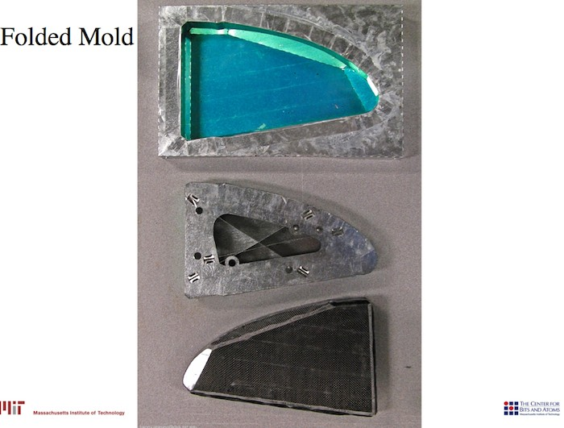

Two project proposals: Building a self assembling low resolution on-site molding system to learn about the possibilities of fab lab designed machines and explore the machines that make machines principles. Designing a fab lab based energy meter, it should require as few external parts as possible but at the same time it should be enough easy to use to encorage people on building it. Original Presentation
1. self assembling modular structure folds in to a limited number of shapes.
using electro-mechanical sys- tems (electromagnets, servos...) and controlled via computer soft- ware.
2. the structure is casted on a cavity obtaining a mold for casting a huge number of final parts.
the structure could be integrated on the casting system creating a full-package system including inside heating and sensing.Some references
 (images cba.mit.edu)Based on David Kopp and Victor Viña work, design and build a distributed network of sensor/actuators for energy management focused on on-site demand control.
The project aims to contributes on IAAC energy efficiency research program and will be integrated on the new Barcelona Green Fab Lab.
The project aims to integrate al- ready existing technologies in one single package and research on power-line internet zero communications.
Some references
(images cba.mit.edu)